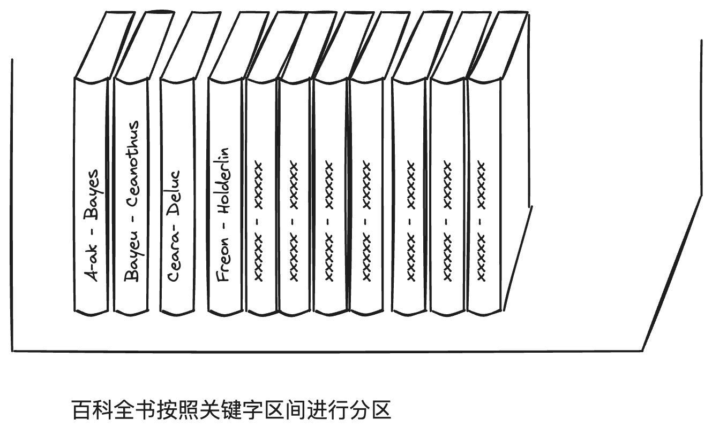

第6章 数据分区
面对海量数据集或非常高的查询压力，光有副本还不行，还需要将数据拆分为分区，也称为分片。事实上，分区和副本常常结合起来使用，来提高系统的扩展性和可用性。
分区方式
分区的目标是将数据和查询负载均匀分布在所有节点上。
如果分区不均匀，那就会出现某些分区比其他分区承担更多的数据量或查询负载的情况，称之为倾斜。极端情况下，所有的负载可能集中在一个分区上，这种严重不成比例的分区即成为系统热点。
避免热点的一个简单方法是随机分配，但是它的缺点是读取数据时，只能并行查询所有节点。
基于关键字区间分区
为每个分区分配一段连续的关键字或关键字范围。

比如对于一个保存网络传感器数据的应用系统，选择测量的时间戳（年-月-日-时-分-秒）作为关键字，此时区间查询非常有用，可以快速查询某个月份的所有数据。
缺点是某些访问模式会导致热点。比如上面的例子，每天对应一个分区，数据写入时，所有的写入都会集中在一个分区，而其他分区处于空闲状态。
解决方案可以在时间戳前面加上传感器名称为前缀。
基于关键字哈希值分区
一个好的哈希函数可以处理数据倾斜。一旦找到合适的哈希函数，就可以为每个分区分配一个哈希范围。
Cassandra和MongoDB使用MD5，Voldmort使用Fowler-Noll-Vo。许多语言也内置简单的哈希函数，比如Java的hashCode，但是要谨慎使用，因为同一键在不同进程中可能返回不同的哈希值。
哈希分区的缺点是丧失了区间查询特性。因为即使关键字相邻，哈希之后也是千差万别。
在MongoDB中，如果启用了哈希分片模式，区间查询会发送到所有的分片上，而Riak、Couchbase和Voldmort干脆就不支持区间查询。
Cassandra支持多个列组成复合主键，复合主键只有第一部分用于哈希分区，其他列可以区间查询。这种特性对于社交网站上，一个用户可能会发布多个消息更新，关键字为(user_id, update_timestamp)的组合，可以高效的查询。
二级索引
二级索引主要挑战是它们不能规整的映射到分区中。
基于文档分区的二级索引
这种方法，每个分区完全独立，各自维护自己的二级索引，且只负责自己分区内的文档而不关心其他分区中的数据。因此文档分区索引也被称为本地索引。
这种索引查询代价高昂，尽管如此，它还是广泛用于实践：MongoDB、Riak、Cassandra、Elasticsearch、Solr、Voldmort都支持。
基于词条的二级索引分区
对索引数据建立全局索引，为了避免成为瓶颈，全局索引也必须进行分区，但是可以采用与关键词不同的分区策略。
好处是查询更高效，坏处是写入较慢且复杂，因为单个文档更新时，可能会涉及多个二级索引的更新，二级索引的分区又可能在不同的节点上，会引入显著的写放大。因此，现有实现都不支持同步更新，更新往往都是异步的。例如Dynamo二级索引通常可以在1秒内完成更新，但是故障时，可能时间会更长。
分区再平衡
也就是大家常说的rebalance。这是一项比较昂贵的操作，通常在下面的情况下才做：
- 查询压力增加，需要更多的CPU来处理负载。
- 数据规模增加，需要更多的内存和磁盘存储数据。
- 节点可能出现故障，需要其他机器取接管失效的节点。
动态再平衡的策略
之所以不用取模的方式分区，是因为节点数量的轻微变化，将会引起分区映射关系的剧烈变动。
固定数量的分区
创建远超节点的分区数，然后为每个节点分配多个分区。例如，对于一个10个节点的集群，一开始就划分为1000个分区，每个节点承担100个分区。如果增加了一个新的节点，从现有的节点上匀走一些分区即可，如果删除一个节点，采用相反的均衡措施。
目前，Riak、Elasticsearch、Couchbase和Voldmort都支持这种方式。
分区数量一经确定，就不会改变，通常已经考虑到扩容需求。这种分区方式不能适应数据集总规模高度不确定或可变的情况。
动态分区
一些数据库，如HBase和RethinkDB采用的方式，当分区数据超过一个可配的阈值（HBase默认是10GB），它就拆分为两个分区，每个承担一半的数据量。相反，会进行分区合并。类似于BTree的分裂和合并操作。
优点是可以自动适配数据总量。缺点是分区的大小参差不齐，可能会导致长尾效应。
不仅适用关键字区间分区，还适用于哈希分区。MongoDB从2.4版本，同时支持两者。
按节点比例分区
前两种方式分区的数据量与数据集大小成正比。Cassandra和Ketama采用第三种方式，使分区数与节点数成正比，也就是每个节点有固定的分区数。这种方法使分区的大小保持稳定。
自动与手动再平衡操作
- 全自动，即由系统自动决定何时从一个节点迁移到另一个节点。
- 纯手动，即分区到节点的映射由管理员显式配置。
- 半自动，由系统自动生成一个分区建议方案，管理员确认。
无疑，全自动再平衡会更加方便，但是再平衡是一项比较昂贵的操作，操作不当的话会影响某些节点的请求，甚至导致级联式失效，因此让管理员介入可能是个更好地选择。
请求路由
这其实属于一类典型的服务发现问题。
概括来讲，有三种方式：
- 客户端请求任意节点。如果节点恰好有需要的分区，直接处理，否则，将请求转发到合适的节点，并将回复转发给客户端。
- 客户端请求一个路由层，由后者将请求转发到合适的节点上。
- 客户端感知分区和节点分配关系，直接请求某个节点。
Cassandra和Riak节点之间使用gossip协议同步集群状态的变化，类似于上面第1种方式。
Couchbase采用第2种方式，通过一个名为moxi的路由层，向集群节点学习最新的路由变化。
LinkedIn的Espresso使用Helix（底层是ZK）进行集群管理，实现了下图所示的请求路由层。HBase、Solr和Kafka也使用ZK来跟踪分区分配情况。MongoDB有类似的设计，但它依赖自己的配置服务器和mongos守护进程来充当路由层。